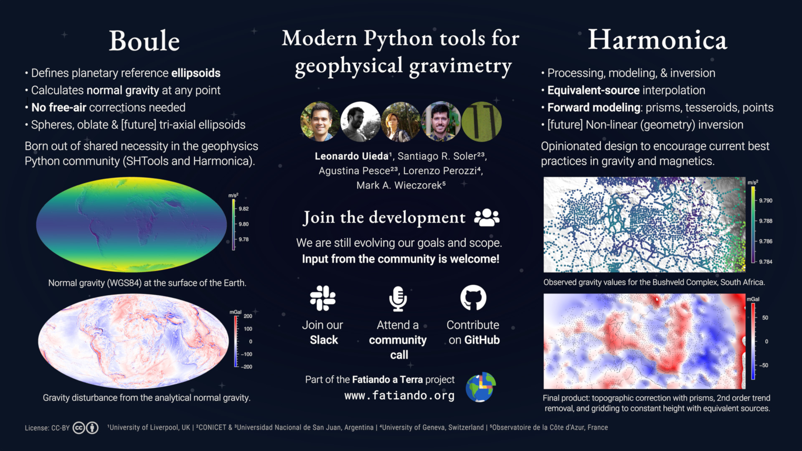
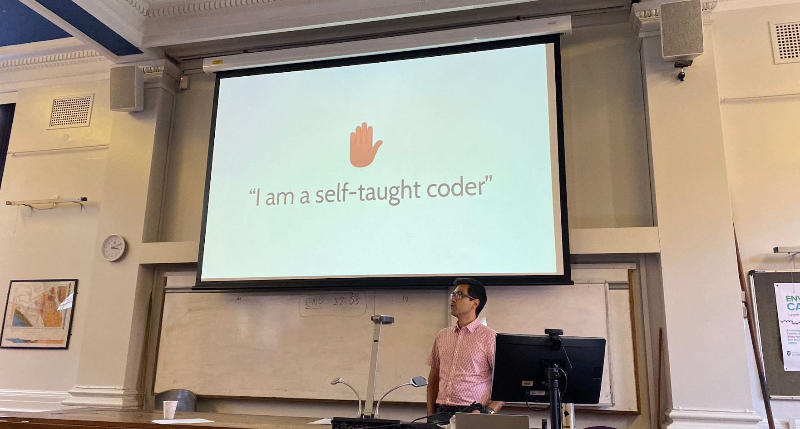
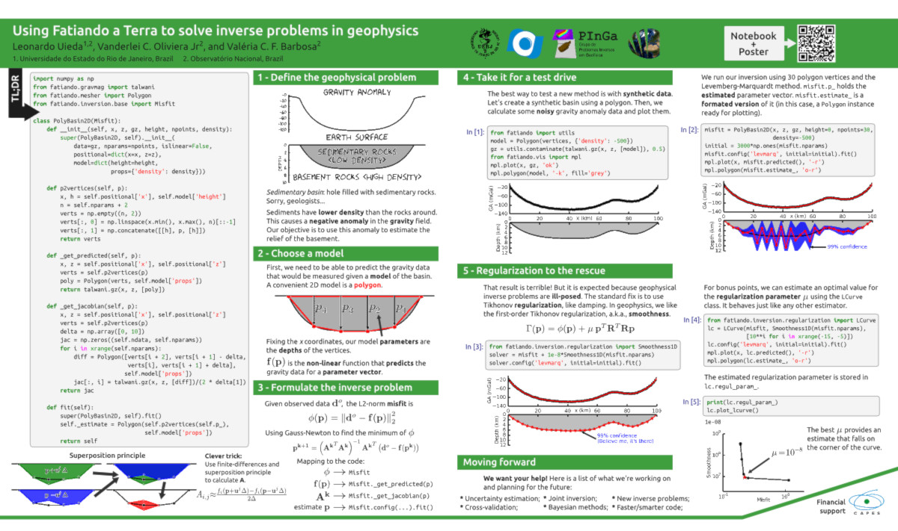

Design useful tools that do one thing well and work together:
rediscovering the UNIX philosophy while building the Fatiando a Terra
project
2021 |
Uieda, L., Li, L., Soler, S. R., Pesce, A.
invited
AGU Fall Meeting
Slides
Code
About
This is an invited presentation about the past, current, and future of
the Fatiando a Terra project. We will cover the current functionality,
recent developments, and lessons learned along the way.
The presentation is centered around a tutorial that walks you through the
steps of transforming observed absolute gravity measurements into a grid
of residual gravity disturbances at a constant height. The tutorial
showcases some of the core utilities of all of our open-source libraries.
Abstract
The Fatiando a Terra project (https://www.fatiando.org) was started in
2010 as a Python library for visualization, forward modelling, and
inversion across different geophysical methods. Over the following 8
years, the project attracted new contributors and grew to include
cutting-edge methods, toy examples for teaching, and helper functions for
visualization. Standards around testing, documentation, and code style
evolved and new tools appeared around the ecosystem (such as SimPEG,
PyVista, Devito, and pyGIMLi), making some of our functionality redundant
and outdated. In an attempt to better interface with the emerging
ecosystem, we started a major restructuring of the code base in 2018.
This presentation will cover the current available functionality and some
of the lessons learned from developing, growing, and maintaining the
project, including current challenges and our future plans.
Python-based workflows for small-to-medium sized data: what works, what
doesn’t, and what can be improved
2021 |
Uieda, L., Soler, S. R.
invited
AGU Fall Meeting
Slides
Code
About
This is an invited talk for the first part of an "Open Scince in Action"
session, with 10 minute talks by panelists followed by a panel
discussion.
Abstract
In this presentation, we will demonstrate the workflow that we have been
establishing at the Computer-Oriented Geoscience Lab for building
"repro-packs" for our papers and projects. We use a combination of
virtual environments, data download and caching tools, notebooks,
Makefiles, and data repositories to provide others with the means to
reproduce and build upon our work. We will also share some of the
unsolved challenges that we have encountered and our dreams for an ideal
workflow.
Academia e software livre: Desafios e oportunidades no Brasil e no
exterior
2021 |
Uieda, L.
invited
National Observatory’s SEG and EAGE Student Chapter, Brazil
Slides
Recording
Code
About
I had the pleasure of giving this talk to the SEG and EAGE Student
Chapter of the Observatório Nacional (where I went to grad school). It
was about my path through science and some tips for those wanting to go
abroad. Slides and talk were in Portuguese.
Abstract
Palestra e bate papo com o National Observatory Greenstone Belt (SEG-EAGE
Student Chapter do Observatório Nacional) sobre minha carreira e dicas
para os alunos que quiserem trilhar um caminho parecido.
Open-science for gravimetry: tools, challenges, and opportunities
2021 |
Uieda, L., Soler, S. R., Pesce, A.
invited
GFZ Helmholtz Centre Potsdam, Germany
| doi:10.6084/m9.figshare.14838477
Slides
Recording
Code
About
This talk is about our recent on the Boule and Harmonica libraries and
how they fit into our current and future research plans. It includes a
live demo of using these tools to process real ground gravity data.
It was an invited talk to the geophysical modelling group at GFZ. Thank
you to Angela Maria Gomez Garcia for the invitation.
Abstract
The Fatiando a Terra project is a collection of open-source Python
libraries for geophysics which cover a range of functionalities, from
data download and processing to modeling and inversion. Many of our tools
are general purpose but we also focus on gravimetry and magnetometry.
Development on the projected started in 2010 and has gone through several
iterations as the team matured and established best practices for
maintaining software projects in the open.
This talk is an overview of the history and current iteration of the
project, including a short demonstration of our current capabilities for
downloading and processing gravity data. We will then move on to our
plans for future directions of the projects and information of how you
can get involved. Finally, we will briefly discuss some of the challenges
and opportunities of adopting open-science practices.
Fatiando a Terra: Open-source tools for geophysics
2021 |
Uieda, L., Soler, S. R., Pesce, A.
invited
Geophysical Society of Houston
Slides
Code
About
This was an invited talk to the Potential Fields group of the GSH. Thank
you to Andrea Balza Morales
for the invitation and for organizing the seminar series.
Abstract
The Fatiando a Terra project is a collection of open-source Python
libraries for geophysics which cover a range of functionalities, from
data download and processing to modeling and inversion. In this
opportunity we will present the two libraries that are focused on
potential fields: Harmonica and Boule. Boule implements reference
ellipsoids (including oblate ellipsoids, spheres, and soon triaxial
ellipsoids), conversions between ellipsoidal and geocentric spherical
coordinates, and normal gravity calculations. The latter are performed
using analytical expressions for gravity fields at any point outside of
the ellipsoid. Harmonica provides tools for processing, forward
modelling, and inversion of gravity and magnetic data. We will
demonstrate its use to compute Bouguer gravity disturbances by forward
modelling the topography with prisms, removing a 2nd order regional
trend, and interpolating it onto a regular grid at a constant height
using the equivalent layer technique. Both libraries are still evolving
as we continue to refine their goals and scopes. We invite everyone to
get involved in the development, whether it's through coding, writing
documentation, or giving feedback.
Harmonica and Boule: Modern Python tools for geophysical gravimetry
2021 |
Uieda, L., Soler, S. R., Pesce, A., Perozzi, L., and Wieczorek, M. A.
EGU General Assembly
| doi:10.5194/egusphere-egu21-8291
Poster
Code
Abstract
Gravimetry is a routine part of the geophysicists toolset, historically
used in geophysics following the geodetic definitions of gravity
anomalies and their related “reductions”. Several authors have shown that
the geodetic concept of a gravity anomaly does not align with goals of
gravimetry in geophysics (the investigation of anomalous density
distributions). Much of this confusion likely stems from the lack of
widely available tools for performing the corrections needed to arrive at
a geophysically meaningful gravity disturbance. For example, free-air
corrections are completely unnecessary since analytical expressions for
theoretical gravity at any point have existed for over a decade. Since
this is not easily done in a spreadsheet or short script, modern tools
for processing and modelling gravity data for geophysics are needed.
These tools must be trustworthy (i.e., extensively tested) and designed
with software development and geophysical best practices in mind.
We present the Python libraries Harmonica and Boule, which are part of
the Fatiando a Terra project. Both
tools are open-source under the permissive BSD license and are developed
in the open by a community of geoscientists and programmers.
Harmonica provides tools for processing, forward modelling, and inversion
of gravity and magnetic data. The first release of Harmonica was focused
on implementing methods for processing and interpolation with the
equivalent source technique, as well as forward modelling with
right-rectangular prisms, point sources, and tesseroids. Current work is
directed towards implementing a processing pipeline for gravity data,
including topographic corrections in Cartesian and spherical coordinates,
atmospheric corrections, and more. The software is still in early stages
of development and design and would benefit greatly from community
involvement and feedback.
Boule implements reference ellipsoids (including oblate ellipsoids,
spheres, and soon triaxial ellipsoids), conversions between ellipsoidal
and geocentric spherical coordinates, and normal gravity calculations
using analytical solutions for gravity fields at any point outside of the
ellipsoid. It includes ellipsoids for the Earth as well as other
planetary bodies in the solar system, like Mars, the Moon, Venus, and
Mercury. This enables the calculation of gravity disturbances for Earth
and planetary data without the need for free-air corrections. Boule was
created out of the shared needs of Harmonica,
SHTools,
and pygeoid and is
developed with input from developers of these projects.
We welcome participation from the wider geophysical community,
irrespective of programming skill level and experience, and are actively
searching for interested developers and users to get involved in shaping
the future of these projects.
Poster

Cite as
Uieda, L., Soler, S. R., Pesce, A., Perozzi, L., and Wieczorek, M. A.:
Harmonica and Boule: Modern Python tools for geophysical gravimetry,
EGU General Assembly 2021, online, 19–30 Apr 2021, EGU21-8291,
https://doi.org/10.5194/egusphere-egu21-8291, 2021.
Geophysical research powered by open-source
2020 |
Uieda, L.
invited
CAU Kiel • USP • TU Freiberg • University of Liverpool
Slides
Recording
Code
About
I've given this talk at a few places in 2020 with some slight
modifications to the slides.
Geographic Data Science Lab, University of Liverpool
Slides: leouieda/liverpool-gdsl-2020
This is the first version of this talk, delivered at the GDSL group
seminars. It was about my path through geophysics guided by my interests
in making open-source software: how I got started with coding, the various
projects I'm developing, how that's shaped my research, and plans for the
future.
 Photo of the presentation at the
Geographic Data Science Lab,
taken by Francisco Rowe.
Photo of the presentation at the
Geographic Data Science Lab,
taken by Francisco Rowe.
Technische Universität Bergakademie Freiberg, Germany
Slides: leouieda/2020-06-04-freiberg
This is the second version of this talk and it was delivered online
because of the COVID-19 pandemic. I changed it a bit to reflect current
research presented at EGU2020 and focus less on the technical side of
development. The online delivery was new to me but it worked out well.
Even though it can be strange to talk to a screen for 50 minutes, the
great questions afterwards more than made up for it.
Universidade de São Paulo, Brazil
Slides: leouieda/2020-06-18-usp
I was really delighted to get an invitation to speak at my alma mater
(roughly 10 years after my graduation). The talk was also delivered
online. This was the first time delivering this talk in Portuguese, which
was a struggle since I had the words prepared in English already (slides
are still in English, though). I added the latest news of the successful
reproduction of the Ferguson COVID-19 modelling results. Funny enough,
this talk is heavily inspired on the last talk I gave there in 2015.
Screen shot of the live Q&A session after the talk, taken by
Eduardo Fernandes Henriques.
Featuring host Ricardo I. F. Trindade
and my good friend Vanderlei,
who wouldn't stop asking questions.
Christian-Albrechts-Universität zu Kiel, Germany
Slides: leouieda/2020-07-01-kiel
This was another online version of the talk. It was really nice to
connect with the geophysicists at Kiel since Prof. Jörg Ebbing's group
uses Tesseroids and was involved in the generation of the GOCE gravity
gradient grids cited in the talk. They have also used the Moho inversion
code and are getting involved in Fatiando. I added some bits to the end
about getting involved in open-source software projects and finding
online communities of practice (with a shout out to the Software
Underground).
Abstract
This is a talk about my path through geophysics and open-source software,
how it's shaped my research and teaching, what I see as the future of
this area (with some tips for informing yourself on current software best
practices), and some of the research we're doing at the Computer-Oriented
Geoscience Lab.
Evaluating the accuracy of equivalent-source predictions using cross-validation
2020 |
Uieda, L., Soler, S. R.
EGU General Assembly
| doi:10.5194/egusphere-egu2020-15729
Slides
About
Presented at EGU 2020 (online because of COVID-19), session
G4.3:
Acquisition and processing of gravity and magnetic field data and their integrative interpretation.
Details some of the work we've been doing in Verde and
Harmonica for machine-learning style
interpolation with equivalent-sources.
In particular, applying state-of-the-art cross-validation strategies to
estimate interpolation accuracy and tune equivalent-source parameters.
Abstract
We investigate the use of cross-validation (CV) techniques to estimate
the accuracy of equivalent-source (also known as equivalent-layer) models
for interpolation and processing of potential-field data. Our preliminary
results indicate that some common CV algorithms (e.g., random
permutations and k-folds) tend to overestimate the accuracy. We have
found that blocked CV methods, where the data are split along spatial
blocks instead of randomly, provide more conservative and realistic
accuracy estimates. Beyond evaluating an equivalent-source model's
performance, cross-validation can be used to automatically determine
configuration parameters, like source depth and amount of regularization,
that maximize prediction accuracy and avoid over-fitting.
Widely used in gravity and magnetic data processing, the
equivalent-source technique consists of a linear model (usually point
sources) used to predict the observed field at arbitrary locations.
Upward-continuation, interpolation, gradient calculations, leveling, and
reduction-to-the-pole can be performed simultaneously by using the model
to make predictions (i.e., forward modelling). Likewise, the use of
linear models to make predictions is the backbone of many machine
learning (ML) applications. The predictive performance of ML models is
usually evaluated through cross-validation, in which the data are split
(usually randomly) into a training set and a validation set. Models are
fit on the training set and their predictions are evaluated using the
validation set using a goodness-of-fit metric, like the mean square error
or the R² coefficient of determination. Many cross-validation methods
exist in the literature, varying in how the data are split and how this
process is repeated. Prior research from the statistical modelling of
ecological data suggests that prediction accuracy is usually
overestimated by traditional CV methods when the data are spatially
auto-correlated. This issue can be mitigated by splitting the data along
spatial blocks rather than randomly. We conducted experiments on
synthetic gravity data to investigate the use of traditional and blocked
CV methods in equivalent-source interpolation. We found that the
overestimation problem also occurs and that more conservative accuracy
estimates are obtained when applying blocked versions of random
permutations and k-fold. Further studies need to be conducted to
generalize these findings to upward-continuation, reduction-to-the-pole,
and derivative calculation.
Open-source software implementations of the equivalent-source and blocked
cross-validation (in progress) methods are available in the Python
libraries Harmonica and Verde, which are part of the Fatiando a Terra
project.
Cite as
Uieda, L. and Soler, S.: Evaluating the accuracy of equivalent-source
predictions using cross-validation, EGU General Assembly 2020, Online,
4–8 May 2020, EGU2020-15729,
https://doi.org/10.5194/egusphere-egu2020-15729, 2020
PyGMT: Accessing the Generic Mapping Tools from Python
2019 |
Uieda, L., Wessel, P.
AGU Fall Meeting
| doi:10.6084/m9.figshare.11320280
Poster
Code
About
This is an update on the progress we've made in PyGMT.
There are examples of some of the new features implemented by myself and
contributors, as well as the main problems we're facing and a call for
volunteers.
The main feedback we got during the meeting is that the API is not very
intuitive for people unfamiliar with GMT (which I expect to be the
majority of users). This has got me thinking of ways to move away from
the direct mapping of GMT modules to PyGMT functions. Instead, we should
implement something that makes sense in Python and call whatever GMT
modules we need to get that done under the hood.
Abstract
For almost 30 years, the Generic Mapping Tools (GMT) have provided the
Earth, Ocean, and Planetary Sciences with an open-source toolbox for
processing and visualizing spatial data (bathymetry, gravity, magnetic,
earthquake focal mechanisms, and more). In many fields, GMT is the de
facto standard for creating high-resolution publication quality maps,
figures, and animations. Since version 5, GMT has provided a C language
Application Programming Interface (API) that allows other programs to
access its core functionality. We are using this bridge to develop
PyGMT
(formerly GMT/Python), an open-source library that allows
users of the Python programming language to leverage the almost thirty
years of continuous GMT development. PyGMT is designed to integrate with
the existing scientific Python ecosystem, including popular packages such
as numpy, pandas, and xarray. PyGMT integrates seamlessly with the
Jupyter notebook, allowing high-quality figures to be generated
interactively both in a personal computer and in cloud computing
environments compatible with Jupyter. We will present the design and
usage of the software package, latest developments and updates, and
lessons learned during its implementation.
Poster
Building the foundations for open-source geophysics
2019 |
Uieda, L.
Department of Earth, Ocean and Ecological Sciences, University of Liverpool
| doi:10.6084/m9.figshare.10255832
Slides
About
I gave this talk at the Earth Sciences Research Group (ESRG) seminar
series of the University of Liverpool. This was my first talk to the
department and I decided to layout why I think open-source development
boosts research productivity and what are the tools we use every day. I
hope to help people find these tools and lead by example in the
Computer-Oriented Geoscience Lab.

I had the absolute pleasure of presenting back-to-back with my friend
David McNamara, who took the
picture above.
Abstract
In this talk, I'll go over some of my work on open-source geophysics
software (Python and GMT), how we're building communities around them,
and how this ties into my current research and efforts towards
reproducibility.
Coupled interpolation of three-component GPS velocities
2018 |
Uieda, L., Xu, X., Wessel, P., Sandwell, D. T.
AGU Fall Meeting
| doi:10.6084/m9.figshare.7440683
Poster
Code
About
This is update on my GPS interpolation work (see the AOGS2018 presentation).
The implementation is entirely based on the
Verde library (there is an
introduction to what it can do on
the blog). This was the first test of the Verde API and I'm glad to
say that it passed with flying colors. Implementing the new methods was
very straight forward and all the tools in Verde made the entire data
processing and model selection pipeline simple and easy.
Abstract
GPS/GNSS measurements of deformation have high accuracy and temporal
resolution but are spatially sparse. Conversely, InSAR provides great
spatial resolution but is limited by the satellite look angle,
atmospheric noise, and the delay between repeat passes. The sparse GPS
data often need to be interpolated on regular grids to be used as
constraints during InSAR processing or to calculate strain rates. The
interpolation is routinely done separately for each component of the
velocity field using minimum curvature or specialized geostatistical
algorithms. Recently, a joint interpolation of the horizontal components
has been proposed. It estimates forces on a thin elastic sheet that fit
the observed data and subsequently uses the estimated model to predict
data on regular grids or arbitrary points. The Green’s functions for the
physical model serve as a coupling between the two vector components
through elasticity theory. We propose an extension of this method to 3D,
using the elastic Green’s functions to couple the horizontal and vertical
components. This enables the inclusion of vector data projected in
arbitrary directions, such as InSAR line-of-sight velocities. The degree
of coupling can be controlled through the Poisson’s ratio of the medium.
We apply damping regularization to smooth the model and avoid
instabilities in the inverse problem. Furthermore, we automatically
select optimal values for the Poisson’s ratio and regularization
parameter through cross-validation, which is common in machine learning
applications. We compare the performance of the coupled model with
uncoupled alternatives to grid 2- and 3-component GPS velocities and
calculate derivatives through finite-differences approximations. We will
present preliminary results from applications to GPS data from the
Himalayas and the calibration of InSAR data products. A future goal is to
integrate InSAR line-of-sight velocities in a joint interpolation with
GPS velocities.
Poster
Machine learning lessons for geophysics
2018 |
Uieda, L.
Department of Earth Sciences, University of Hawai‘i at Mānoa
| doi:10.6084/m9.figshare.7203344
Slides
Code
About
I gave this presentation at the TGIF Seminar series of the
Department of Earth
Sciences, University of Hawaii at Manoa.
The topic merges my interest in machine learning, how we can borrow some
techniques for geophysical inversion, and the similarities with gridding
problems, like my work on GPS gridding.
Abstract
Machine learning is the new trend sweeping across the Earth Sciences.
From the oil and gas industry to oceanography, these algorithms are being
trained to solve previously unsolvable (or extremely tedious) problems.
But what exactly is "machine learning" and what can be done with it? In
this talk, I will present a brief high-level overview of some of the core
concepts and interesting applications of machine learning methods to
geoscience data. I will also explore some of the best practices and
techniques that can be applied to geophysical inversion and interpolation
methods, including a new method for gridding 3-component GPS data.
Building an object-oriented Python interface for the Generic Mapping Tools
2018 |
Uieda, L., Wessel, P.
SciPy 2018
| doi:10.6084/m9.figshare.6814052
Slides
Recording
Code
About
This was the second talk I gave at SciPy about
GMT/Python, a wrapper that
I'm building for the Generic
Mapping Tools.
It showed the progress that we made in the past year, what our struggles
and successes were, and our plans for the future.
Abstract
We are building a Python wrapper for the Generic Mapping Tools (GMT), a
set of command-line programs used across the Earth, Atmospheric, and
Ocean Sciences to process and visualize geographic data. At SciPy 2017,
we presented the project goals and an initial prototype. The feedback
received led to improvements in the design of the library, mainly the
creation of an object-oriented API. We will present the newest
developments including support for numpy arrays and pandas Dataframes,
interactive visualization in the Jupyter notebook using NASA WorldWind,
and more. Once again, we seek feedback from the community to guide us
moving forward.
Joint interpolation of 3-component GPS velocities constrained by elasticity
2018 |
Uieda, L., Sandwell, D., Wessel, P.
AOGS 15th Annual Meeting
| doi:10.6084/m9.figshare.6387467
Slides
Code
About
This talk is about some early results from a collaboration me and Paul
have with David Sandwell.
The project was started by Paul and Dave as a follow up to their
2016 paper about
interpolating 2D vector data.
We're expanding it into 3D and ironing out some kinks in the methodology.
I picked it up at the beginning of the year and have been slowly trying
things out. It was a great chance to play with some tools from machine
learning since this is a supervised prediction problem. Unlike most
geophysical inversion, we're not really interested in the estimated
parameters themselves. They are only a means to predict new values (on a
regular grid in the case of gridding). I started implementing the tools I
would need in a Python library called
Verde, which served as
the basis for the results shown in the presentation.
Abstract
Vertical ground motion at fault systems can be difficult to detect due to
their small amplitude and contamination from non-tectonic sources, such
as ground water loading. However, it may play an important role in our
understanding of the earthquake cycle and the associated seismic hazards.
Ground motion measurements from GPS are often sparse and must be
interpolated onto a regular grid (e.g., for computing strain rate),
ideally taking into account the varying degrees of uncertainty of the
data. Traditionally, each vector component is interpolated separately
using minimum curvature or biharmonic spline methods. Recently, a joint
interpolation of the two horizontal components has been developed using
the Green's functions for a point force deforming a thin elastic sheet.
The elasticity constraints provide a coupling between the two vector
components and lead to improved results because the underlying physics of
the method approximately matches that of the GPS observations. We propose
an expansion of this method into 3D in order to incorporate vertical GPS
velocity measurements. To smooth the model and avoid singularities, we
formulate the interpolation as a weighted least-squares inverse problem
with damping regularization. Optimal values of the regularization
parameter and the Poisson's ratio of the elastic medium are determined
through K-fold cross-validation, a technique often used in machine
learning for model selection. Additionally, the cross-validation provides
a measure of the accuracy of model predictions and eliminates the need
for manual configuration. The computational load of the inversion is
lessened by imposing a cutoff distance to the Green's functions
computations, which makes the sensitivity matrix sparse. We will present
preliminary results from an application to EarthScope GPS data from the
San Andreas Fault system. In the future, we aim to develop a joint
inversion of 3D GPS and InSAR line-of-sight velocities to improve data
coverage.
Integrating the Generic Mapping Tools with the Scientific Python ecosystem
2018 |
Uieda, L., Wessel, P.
AOGS 15th Annual Meeting
| doi:10.6084/m9.figshare.6399944
Poster
Code
About
This is the third presentation I gave about my work on
GMT/Python. This is by far the nicest
poster I have ever designed.
It showcases the new support for gmt.Figure.grdimage, the
built-in Earth relief datasets in GMT6, and plotting vectors with
gmt.Figure.plot. I wanted to have a more sophisticated
showcase of grdimage but I ran into some bugs before the
conference and wasn't able to finish it in time. Still, I'm amazed at how
few lines of code are required to make the figure in the poster. The more
I get to know GMT, the more I'm impressed by how much thought and
attention was, and still is, poured into it.
Abstract
The Generic Mapping Tools (GMT) are used throughout the geosciences to
processes spatial data and create publication quality data
visualizations, such as contour maps, earthquake focal mechanism
solutions, and animations. The software is programmed in the C language
and is accessed through a command-line interface. Recent versions of GMT
also provide an Application Programming Interface (API) that allows
access to the core functionality from other programming languages,
potentially expanding the reach of GMT far beyond the current user base.
A GMT toolbox for Matlab using the API has already been released, and an
experimental interface from the Julia language is being developed. We are
building a software library to interface GMT with the Python programming
language. Popularity of Python has grown steadily in the Earth Sciences
due to its simplicity and powerful set of scientific libraries. However,
there is still great need for the geospatial processing and mapping
capabilities of GMT. The GMT/Python library integrates with the
scientific Python ecosystem through the support of common Python data
types: numpy "ndarrays" and Pandas "DataFrames" for tabular data and
xarray "Datasets" for grids. We have also implemented support for the
Jupyter notebooks, a web-based interactive computing environment. These
features will help make GMT more accessible to students and professional
geoscientists who lack an extensive background in Unix tools and shell
scripting. GMT/Python is an open-source project in early stages of
development. The current focus is on the implementation of a robust set
of core routines that implement the bridge between Python and GMT. Later,
we will expand the library to cover the entire functionality of GMT. A
first release is predicted for the late 2018. The latest documentation
and source code can be accessed through the website
www.pygmt.org.
Poster
A modern Python interface for the Generic Mapping Tools
2017 |
Uieda, L., Wessel, P.
AGU Fall Meeting
| doi:10.6084/m9.figshare.5662411
Poster
Code
About
This is the second conference presentation about my work on GMT/Python.
The first was my talk at SciPy 2017. I mostly made progress establishing
the basis for the software: documentation build, CIs, and the code to
talk to the C API. I hadn't presented a poster in 3 years and I really
enjoyed designing this one. The background image was generated using
GMT/Python (see the code in the poster). It's a clean design and I like
how it turned out.
Abstract
Figures generated by The Generic Mapping Tools (GMT) are present in
countless publications across the Earth sciences. The command-line
interface of GMT lends the tool its flexibility but also creates a
barrier to entry for beginners. Meanwhile, adoption of the Python
programming language has grown across the scientific community. This
growth is largely due to the simplicity and low barrier to entry of the
language and its ecosystem of tools. Thus, it is not surprising that
there have been at least three attempts to create Python interfaces for
GMT: gmtpy, pygmt, and PyGMT. None of these projects are currently active
and, with the exception of pygmt, they do not use the GMT Application
Programming Interface (API) introduced in GMT 5. The two main Python
libraries for plotting data on maps are the matplotlib Basemap toolkit
(matplotlib.org/basemap) and Cartopy (scitools.org.uk/cartopy), both of
which rely on matplotlib (matplotlib.org) as the backend for generating
the figures. Basemap is known to have limitations and is being
discontinued. Cartopy is an improvement over Basemap but is still bound
by the speed and memory constraints of matplotlib. We present a new
Python interface for GMT (GMT/Python) that makes use of the GMT API and
of new features being developed for the upcoming GMT 6 release. The
GMT/Python library is designed according to the norms and styles of the
Python community. The library integrates with the scientific Python
ecosystem by using the “virtual files” from the GMT API to implement
input and output of Python data types (numpy “ndarray” for tabular data
and xarray “Dataset” for grids). Other features include an
object-oriented interface for creating figures, the ability to display
figures in the Jupyter notebook, and descriptive aliases for GMT
arguments (e.g., “region” instead of “R” and “projection” instead of
“J”). GMT/Python can also serve as a backend for developing new
high-level interfaces, which can help make GMT more accessible to
beginners and more intuitive for Python users. GMT/Python is an
open-source project hosted on GitHub and is in early stages of
development. A first release will accompany the release of GMT 6, which
is expected for early 2018.
Poster
Nurturing reliable and robust open-source scientific software
2017 |
Uieda, L., Wessel, P.
invited
AGU Fall Meeting
Recording
Code
About
I was invited to this panel session on
Open-Source Software in the Geosciences
along with Kerry Key, Brian Savage, Gary D Egbert, Colin Andrew Zelt, and
Lion Krischer. Many thanks to the chairs Lindsey Heagy, Anna Kelbert and
Louise Pellerin for putting this together.
Abstract
Scientific results are increasingly the product of software. The
reproducibility and validity of published results cannot be ensured
without access to the source code of the software used to produce them.
Therefore, the code itself is a fundamental part of the methodology and
must be published along with the results. With such a reliance on
software, it is troubling that most scientists do not receive formal
training in software development. Tools such as version control,
continuous integration, and automated testing are routinely used in
industry to ensure the correctness and robustness of software. However,
many scientist do not even know of their existence (although efforts like
Software Carpentry are having an impact on this issue). Publishing the
source code is only the first step in creating an open-source project.
For a project to grow it must provide documentation, participation
guidelines, and a welcoming environment for new contributors. Expanding
the project community is often more challenging than the technical
aspects of software development. Maintainers must invest time to enforce
the rules of the project and to onboard new members, which can be
difficult to justify in the context of the “publish or perish” mentality.
This problem will continue as long as software contributions are not
recognized as valid scholarship by hiring and tenure committees.
Furthermore, there are still unsolved problems in providing attribution
for software contributions. Many journals and metrics of academic
productivity do not recognize citations to sources other than traditional
publications. Thus, some authors choose to publish an article about the
software and use it as a citation marker. One issue with this approach is
that updating the reference to include new contributors involves writing
and publishing a new article. A better approach would be to cite a
permanent archive of individual versions of the source code in services
such as Zenodo. However, citations to these sources are not always
recognized when computing citation metrics. In summary, the widespread
development of reliable and robust open-source software relies on the
creation of formal training programs in software development best
practices and the recognition of software as a valid form of scholarship.
Bringing the Generic Mapping Tools to Python
2017 |
Uieda, L., Wessel, P.
SciPy 2017
| doi:10.6084/m9.figshare.7635833
Slides
Recording
Code
About
This was the first talk I gave about GMT/Python, a wrapper that
I'm building for the Generic
Mapping Tools. I didn't have that much implemented yet but was able
to give a quick demo.
Abstract
The Generic Mapping Tools (GMT) is an open-source software package widely
used in the geosciences to process and visualize time series and gridded
data. Maps generated by GMT are ubiquitous in scientific publications in
areas such as seismology and oceanography. We present a new GMT Python
wrapper library built by the GMT team. We will show the design plans,
internal implementations, and demonstrate an initial prototype of the
library. Our wrapper connects to the GMT C API using ctypes and allows
input and output using data from numpy ndarrays and xarray Datasets. The
library is still in early stages of design and implementation and we are
eager for contributions and feedback from the SciPy community.
Inverting gravity to map the Moho: A new method and the open source software that made it possible
2017 |
Uieda, L.
Department of Geology and Geophysics, University of Hawai‘i at Mānoa
| doi:10.6084/m9.figshare.4779766
Slides
Code
About
I gave this presentation at the
Department of Geology and Geophysics
TGIF Seminar series shortly after arriving at the University of Hawaii
for my postdoc to work on GMT.
The last interesting results that I'd had were from my PhD thesis so I
thought I'd present that, though heavily edited in the interest of time.
Abstract
The inner density distribution of the Earth can be inferred from
disturbances in its gravitational field. However, accomplishing this is
never easy. There are many possible parameterizations for the
mathematical model, which is often non-linear. To make matters worse,
gravity data alone do not contain enough information to obtain a unique
and stable solution. One must add independent information to constrain
the solution space, often in the form of regularization. Many different
methods for performing this inference have been developed and research in
this field is still active. Investigating new methodologies implies
developing complex software, which often must be able to deal with sparse
matrices and parallelism. I’ll present the open-source Python library
Fatiando a Terra. It implements many of the components required for
developing inversion methods, such as forward modeling, data processing
and I/O, and regularization. I’ll also show how I used this library to
develop a computationally efficient method for estimating the Moho depth
from gravity data using a spherical approximation of the Earth.
Fatiando a Terra: construindo uma base para ensino e pesquisa de geofísica
2016 • 2015 |
Uieda, L.
Observatório Nacional • Universidade de São Paulo
| doi:10.6084/m9.figshare.1381870
Slides
Code
About
This is a presentation I gave for the Department of Geophysics of the
University of São Paulo and also at the Observatório Nacional. It's about
my open-source project Fatiando a Terra and how I'm using for teaching
geophysics and doing my own research on inverse problems. It was also my
first invited talk and it was an honor to be back at my alma mater as a
professor instead of a student.
Abstract
O Fatiando a Terra é uma biblioteca feita na linguagem Python que tem
como objetivo facilitar o trabalho de pesquisadores e professores na área
geofísica. Os módulos da biblioteca foram planejados para facilitar a
combinação de seus componentes de diversas formas. Por exemplo, o mesmo
módulo de modelagem direta pode ser usado para produzir dados sintéticos,
desenvolver um método de inversão ou como parte de uma interface gráfica
interativa. Além disso, as funções da biblioteca podem ser combinadas com
funções desenvolvidas pelo usuário e com as muitas bibliotecas
científicas da linguagem Python. O módulo de problemas inversos
automatiza grande parte da implementação de um novo método de inversão. O
pesquisador implementa somente o cálculo de dados preditos e da matriz de
sensibilidade, ambos reutilizando os diversos módulos de modelagem
direta. Com essas duas funções, o usuário pode escolher livremente entre
diversos métodos de optimização e regularização para executar sua
inversão.
Para o ensino de geofísica, a biblioteca pode ser combinada com a
interatividade de outros programas, particularmente o IPython notebook
(www.ipython.org). Conceitos difíceis de serem transmitidos em aula podem
ser explorados pelos alunos de forma interativa, com botões, gráficos e
animações. Por exemplo, para ensinar a reflexão e refração de ondas
sísmicas, o professor pode utilizar simulações numéricas da propagação de
ondas para produzir animações em tempo real. Outro exemplo é permitir aos
alunos explorar como o campo geomagnético interage com um corpo geológico
a diferentes latitudes para produzir uma anomalia magnética de campo
total. Dessa forma, os alunos ganham experiência e intuição ao interagir
com os resultados.
A implementação de diversos métodos geofísicos em uma única biblioteca
fornece a base necessária para a rápida criação de novas metodologias e
material didático interativo. A maior parte da funcionalidade atual é
para gravimetria e magnetometria, embora já exista um núcleo de sísmica e
sismologia que está sendo desenvolvido. O projeto necessita de usuários e
desenvolvedores para crescer e abranger os demais ramos da geofísica. O
projeto é software livre e contribuições de qualquer forma são bem
vindas.
Using Fatiando a Terra to solve inverse problems in geophysics
2014 |
Uieda, L., Oliveira Jr, V. C., Barbosa, V. C. F.
SciPy 2014
| doi:10.6084/m9.figshare.1089987
Poster
Code
About
This was my second time at SciPy presenting about Fatiando a Terra (see
my SciPy2013 talk). The poster is about some of the work me and Vanderlei
had been doing on a general purpose inverse problems framework.
As a bonus, I made this gif for the Twitter hashtag
#scipy2014
using Fatiando to model seismic wave propagation.
Abstract
Inverse problems haunt the nightmares of geophysics graduate students.
I'll demonstrate how to conquer them using Fatiando a Terra. The new
machinery in Fatiando contains many ready-to-use components and automates
as much of the process as possible. You can go from zero to regularized
gravity inversion with as little as 30 lines of code. I'll walk through
an example to show you how.
Poster

Gravity inversion in spherical coordinates using tesseroids
2014 |
Uieda, L., Barbosa, V. C. F.
EGU General Assembly
| doi:10.6084/m9.figshare.1155457
Slides
Code
Abstract
Satellite observations of the gravity field have provided geophysicists
with exceptionally dense and uniform coverage of data over vast areas.
This enables regional or global scale high resolution geophysical
investigations. Techniques like forward modeling and inversion of gravity
anomalies are routinely used to investigate large geologic structures,
such as large igneous provinces, suture zones, intracratonic basins, and
the Moho. Accurately modeling such large structures requires taking the
sphericity of the Earth into account. A reasonable approximation is to
assume a spherical Earth and use spherical coordinates.
In recent years, efforts have been made to advance forward modeling in
spherical coordinates using tesseroids, particularly with respect to
speed and accuracy. Conversely, traditional space domain inverse modeling
methods have not yet been adapted to use spherical coordinates and
tesseroids. In the literature there are a range of inversion methods that
have been developed for Cartesian coordinates and right rectangular
prisms. These include methods for estimating the relief of an interface,
like the Moho or the basement of a sedimentary basin. Another category
includes methods to estimate the density distribution in a medium. The
latter apply many algorithms to solve the inverse problem, ranging from
analytic solutions to random search methods as well as systematic search
methods.
We present an adaptation for tesseroids of the systematic search method
of "planting anomalous densities". This method can be used to estimate
the geometry of geologic structures. As prior information, it requires
knowledge of the approximate densities and positions of the structures.
The main advantage of this method is its computational efficiency,
requiring little computer memory and processing time. We demonstrate the
shortcomings and capabilities of this approach using applications to
synthetic and field data. Performing the inversion of gravity and gravity
gradient data, simultaneously or separately, is straight forward and
requires no changes to the existing algorithm. Such feature makes it
ideal for inverting the multicomponent gravity gradient data from the
GOCE satellite.
Modeling the Earth with Fatiando a Terra
2013 |
Uieda, L., Oliveira Jr., V. C., Barbosa, V. C. F.
SciPy 2013
| doi:10.25080/Majora-8b375195-010
Slides
Recording
Code
About
This was the first presentation that I made about Fatiando a Terra, a
Python library for modeling and inversion in geophysics. The proceedings
paper that accompanies this talk became the second chapter of my PhD
thesis.
Abstract
Solid Earth geophysics is the science of using physical observations of
the Earth to infer its inner structure. Generally, this is done with a
variety of numerical modeling techniques and inverse problems. The
development of new algorithms usually involves copy and pasting of code,
which leads to errors and poor code reuse. Added to this is a modeling
pipeline composed of various tools that don't communicate with each other
(Fortran/C for computations, large complicated I/O files, Matlab/VTK for
visualization, etc). Fatiando a Terra is a Python library that aims to
unify the modeling pipeline inside of the Python language. This allows
users to replace the traditional shell scripting with more versatile and
powerful Python scripting. Together with the new IPython notebook,
Fatiando a Terra can integrate all stages of the geophysical modeling
process, like data pre-processing, inversion, statistical analysis, and
visualization. However, the library can also be used for quickly
developing stand-alone programs that can be integrated into existing
pipelines. Plus, because functions inside Fatiando a Terra use a common
data and mesh format, existing algorithms can be combined and new ideas
can build upon existing functionality. This flexibility facilitates
reproducible computations, prototyping of new algorithms, and interactive
teaching exercises. Although the project has so far focused on potential
field methods (gravity and magnetics), some numerical tools for other
geophysical methods have been developed as well. The library already
contains: fast implementations of forward modeling algorithms (using
Numpy and Cython), generic inverse problem solvers, unified geometry
classes (prism meshes, polygons, etc), functions to automate repetitive
plotting tasks with Matplotlib (automatic griding, simple GUIs, picking,
projections, etc) and Mayavi (automatic conversion of geometry classes to
VTK, drawing continents, etc). In the future, we plan to continuously
implement classic and state-of-the-art algorithms as well as sample
problems to help teach geophysics.
3D magnetic inversion by planting anomalous densities
2013 |
Uieda, L., Barbosa, V. C. F.
AGU Meeting of the Americas
| doi:10.6084/m9.figshare.703651
Slides
Code
Note: As you may have noticed, there is an error in the title. We do not, in
fact, invert magnetic data using density anomalies. This illustrates the
perils of copy-pasting combined with a looming deadline.
About
This talk presents an adaptation of the gravity-gradient inversion method
I developed for my Masters degree dissertation "Robust 3D gravity
gradient inversion by planting anomalous densities" to invert magnetic
data.
Abstract
We present a new 3D magnetic inversion algorithm based on the
computationally efficient method of planting anomalous densities. The
algorithm consists of an iterative growth of the anomalous bodies around
prismatic elements called "seeds". These seeds are user-specified and
have known magnetizations. Thus, the seeds provide a way for the
interpreter to specify the desired skeleton of the anomalous bodies. The
inversion algorithm is computationally efficient due to various
optimizations made possible by the iterative nature of the growth
process. The control provided by the use of seeds allows one to test
different hypothesis about the geometry and magnetization of targeted
anomalous bodies. To demonstrate this capability, we applied our
inversion method to the Morro do Engenho (ME) and A2 magnetic anomalies,
central Brazil (Figure 1a). ME is an outcropping alkaline intrusion
formed by dunites, peridotites and pyroxenites with known magnetization.
A2 is a magnetic anomaly to the Northeast of ME and is thought to be a
similar intrusion that is not outcropping. Therefore, a plausible
hypothesis is that A2 has the same magnetization as ME. We tested this
hypothesis by performing an inversion using a single seed for each body.
Both seeds had the same magnetization. Figure 1b shows that the inversion
produced residuals up to 2000 nT over A2 (i.e., a poor fit) and less than
400 nT over ME (i.e., an acceptable fit). Figure 1c shows that ME is a
compact outcropping body with bottom at approximately 5 km, which is in
agreement with previous interpretations. However, the estimate produced
by the inversion for A2 is outcropping and is not compact. In summary,
the estimate for A2 provides a poor fit to the observations and is not in
accordance with the geologic information. This leads to the conclusion
that A2 does not have the same magnetization as ME. These results
indicate the usefulness and capabilities of the inversion method here
proposed.
Iron ore interpretation using gravity-gradient inversions in the Carajás, Brazil
2012 |
Carlos, D. U., L. Uieda, Y. Li, V. C. F. Barbosa, M. A. Braga, G. Angeli, G. Peres
SEG Annual Meeting
| doi:10.1190/segam2012-0525.1
Slides
Code
About
This presentation is about the work Dionisio U. Carlos did for his PhD.
He used my planting inversion method on data from his research area in
central Brazil. He couldn't make it to the meeting so I ended up giving
the talk on his behalf.
Abstract
We have interpreted the airborne gravity gradiometry data from Carajás
Mineral Province (CMP), Brazil, by using two different 3D inversion
methods. Both inversion methods parameterized the Earth's subsurface into
prismatic cells and estimate the 3D density-contrast distribution that
retrieves an image of geologic sources subject to an acceptable data
misfit. The first inversion method imposes smoothness on the solution by
solving a linear system that minimizes an depth weighted L2 model
objective function of density-contrast distribution. The second imposes
compactness on the solution by using an iterative growth algorithm solved
by a systematic search algorithm that accretes mass around user-specified
prisms called “seeds”. Using these two inversion methods, the
interpretation of full tensor gravity gradiometry data from an iron ore
deposit in the area named N1 at CMP shows the consistent geometry and the
depth of iron orebody. To date, the maximum depth of the iron orebody is
assumed to be 200 m based on the maximum depth attained by the deepest
well drilled in this study area. However, both inversion results exhibit
a source whose maximum bottom depth is greater than 200 m. These
results give rise two interpretations: i) the iron orebody may present
its depth to the bottom greater than the maximum depth of 200 m attained
by the deepest borehole; or ii) the iron orebody may be 200 m deep and
the rocks below may be jaspilite whose density is close to that of soft
hematite.
Use of the "shape-of-anomaly" data misfit in 3D inversion by planting
anomalous densities
2012 |
Uieda, L., Barbosa, V. C. F.
SEG Annual Meeting
| doi:10.1190/segam2012-0383.1
Slides
Code
About
This talk is about an improvement to the method described in the paper
"Robust 3D gravity gradient inversion by planting anomalous densities".
Abstract
We present an improvement to the method of 3D gravity gradient inversion
by planting anomalous densities. This method estimates a density-contrast
distribution defined on a grid of right-rectangular prisms. Instead of
solving large equation systems, the method uses a systematic search
algorithm to grow the solution, one prism at a time, around
user-specified prisms called "seeds". These seeds have known density
contrasts and the solution is constrained to be concentrated around the
seeds as well as have their density contrasts. Thus, prior geologic and
geophysical information are incorporated into the inverse problem through
the seeds. However, this leads to a strong dependence of the solution on
the correct location, density contrast, and number of seeds used. Our
improvement to this method consists of using the "shape-of-anomaly"
data-misfit function in conjunction with the l2-norm data-misfit
function. The shape-of-anomaly function measures the different in shape
between the observed and predicted data and is insensitive to differences
in amplitude. Tests on synthetic and real data show that the improved
method not only has an increased robustness with respect to the number of
seeds and their locations, but also provides a better fit of the observed
data.
Rapid 3D inversion of gravity and gravity gradient data to test geologic
hypotheses
2012 |
Uieda, L., Barbosa, V. C. F.
International Symposium on Gravity, Geoid and Height Systems
| doi:10.6084/m9.figshare.156859
Slides
Code
Abstract
Forward modeling of potential fields is a useful way to incorporate the
interpreter's knowledge about the geology of the interpretation area into
the model. However, this can be a very tedious task. This is specially
true when modeling in 3D and trying to fit multiple components, e.g., in
gravity gradiometry. The interpreter is required to simultaneously
supervise the data fit and the construction of geologically realistic 3D
bodies. This problem is partially solved by methods of geophysical
inversion, which automatically fit the data. Conversely, inverse problems
introduce other challenges of their own. Most geophysical inverse
problems are ill-posed because their solutions are neither unique nor
stable. Thus, they require the introduction of prior information, usually
through regularizing functions. Moreover, 3D inverse problems are very
computationally expensive. Recent developments in potential field
inversion have proposed different regularizing functions to transform the
ill-posed problem into a well-posed one. Also, several techniques, like
data compression and parallel computation, have been applied to overcome
the computational complexity. We call attention to the method of
potential field inversion by planting anomalous densities. This method
uses an iterative algorithm to automatically grow the anomalous bodies
around user-specified prismatic elements called "seeds", which have fixed
density contrasts and positions. These seeds provide a first estimate of
the skeletal outlines of the presumed anomalous bodies. Then, the
inversion iteratively concentrates mass around this "skeleton" in a way
that both fits the observed data and yields compact bodies. Therefore,
the interpreter can easily impose prior information on the inversion
through the seeds. The interpreter needs only to supply a few seeds that
specify the sources' skeleton, eliminating the exhaustive task of
specifying the complete geometry of multiple sources. Moreover, the
interpreter is liberated from the time- consuming procedure of yielding a
reasonable fit to the data. Due to its high computational efficiency, the
method of planting anomalous densities can be used to quickly test
geologic hypothesis of different locations and density contrasts for
presumed sources. To test a hypothesis, one would choose the locations
and density contrasts of the seeds accordingly and verify if the
inversion result is able to fit the observed data. If it is not able,
then the hypothesis can be rejected and a new one can be formulated and
tested. Otherwise, there is no reason to reject the hypothesis on the
basis of the geophysical data. Thus, the method can be viewed as a an
enhanced forward modeling. The method of planting anomalous densities can
be used with both gravity and gravity gradient data. This makes it an
ideal tool to interpret compact geologic bodies using the new generation
GOCE data. We present applications to synthetic and real data that
illustrate the usefulness of our method.
Robust 3D gravity gradient inversion by planting anomalous densities
2011 |
Uieda, L., Barbosa, V. C. F.
SEG Annual Meeting
| doi:10.1190/1.3628201
Slides
Code
About
This talk and expanded abstract present the second version of what would
eventually become my first publication "Robust 3D gravity gradient
inversion by planting anomalous densities" and Masters dissertation.
Abstract
We present a new gravity gradient inversion method for estimating a 3D
density-contrast distribution defined on a grid of prisms. Our method
consists of an iterative algorithm that does not require the solution of
a large equation system. Instead, the solution grows systematically
around user-specified prismatic elements called "seeds". Each seed can be
assigned a different density contrast, allowing the interpretation of
multiple bodies with different density contrasts and that produce
interfering gravitational effects. The compactness of the solution around
the seeds is imposed by means of a regularizing function. The solution
grows by the accretion of neighboring prisms of the current solution. The
prisms for the accretion are chosen by systematically searching the set
of current neighboring prisms. Therefore, this approach allows that the
columns of the Jacobian matrix be calculated on demand, which greatly
reduces the demand of computer memory and processing time. Tests on
synthetic data and on real data collected over an iron ore province of
Quadrilátero Ferrífero, southeastern Brazil, confirmed the ability of our
method in detecting sharp and compact bodies.
3D gravity inversion by planting anomalous densities
2011 |
Uieda, L., Barbosa, V. C. F.
Internation Congress of the Brazilian Geophysical Society
| doi:10.1190/sbgf2011-179
Slides
Code
About
This talk and expanded abstract are a branch of my Masters degree
research. It presents an adaptation of the gravity-gradient inversion to
gravity data.
Abstract
This paper presents a novel gravity inversion method for estimating a 3D
density-contrast distribution defined on a grid of prisms. Our method
consists of an iterative algorithm that does not require the solution of
a large equation system. Instead, the solution grows systematically
around user-specified prismatic elements called "seeds". Each seed can
have a different density contrast, allowing the interpretation of
multiple bodies with different density contrasts and interfering
gravitational effects. The compactness of the solution around the seeds
is imposed by means of a regularizing function. The solution grows by the
accretion of neighboring prisms of the current solution. The prisms for
the accretion are chosen by systematically searching the set of current
neighboring prisms. Therefore, this approach allows that the columns of
the Jacobian matrix be calculated on demand. This is a known technique
from computer science called "lazy evaluation", which greatly reduces the
demand of computer memory and processing time. Test on synthetic data and
on real data collected over the ultramafic Cana Brava complex, central
Brazil, confirmed the ability of our method in detecting sharp and
compact bodies.
3D gravity gradient inversion by planting density anomalies
2011 |
Uieda, L., Barbosa, V. C. F.
73th EAGE Conference and Exhibition incorporating SPE EUROPEC
| doi:10.3997/2214-4609.20149567
Poster
Code
About
This poster and expanded abstract present the first version of what would
be my first publication "Robust 3D gravity gradient inversion by planting
anomalous densities" and eventually Masters dissertation.
Abstract
We present a new gravity gradient tensor inversion for estimating a 3D
density-contrast distribution defined on a user-specified grid of prisms.
Our method consists of an iterative algorithm that does not require the
solution of large equation system. Instead, the solution grows
systematically around user-specified prismatic elements called “seeds”.
Each seed can have a different density contrast, allowing the
interpretation of multiples bodies with different density contrasts. The
compactness of the solution is imposed by means of a regularizing
function that favors compact bodies closest to the priorly specified
seeds. The solution grows by accreting neighboring prisms of the current
solution. The prisms for the accretion are chosen by systematically
searching the set of current neighboring prisms. Therefore, this approach
allows that the columns of the Jacobian matrix be calculated on demand.
This is a known technique from computer science called “lazy evaluation”,
which greatly reduces the demand of computer memory and processing time.
Test on synthetic data from multiple buried sources at different depths
and on real data collected over iron deposits located in the Quadrilátero
Ferrífero, southeastern region of Brazil, confirmed the ability of our
method in detecting sharp and compact bodies.
Poster
Optimal forward calculation method of the Marussi tensor due to a
geologic structure at GOCE height
2011 |
Uieda, L., E. P. Bomfim, C. Braitenberg, and E. Molina
4th International GOCE User Workshop
| doi:10.6084/m9.figshare.92624
Poster
Code
About
This poster and conference proceedings present the results and methods
after the 1.0 release of Tesseroids. Version 1.0 was a complete re-write
of the original Python code in the C language. This work was made
possible by professor Carla Braitenberg. She funded me to spend a month
at the University of Trieste, Italy, and re-write the software from
scratch. What followed was a much faster and more robust
program.
This version also featured the first iteration of the adaptive
discretization presented in the paper "Tesseroids: forward modeling
gravitational fields in spherical coordinates" and my PhD thesis.
Abstract
The new observations of GOCE present a challenge to develop new
calculation methods that take into account the sphericity of the Earth.
We address this problem by using a discretization with a series of
tesseroids. There is no closed formula giving the gravitational fields of
the tesseroid and numerical integration methods must be used, such as the
Gauss Legendre Cubature (GLC). A problem that arises is that the
computation times with the tesseroids are high. Therefore, it is
important to optimize the computations while maintaining the desired
accuracy. This optimization was done using an adaptive computation scheme
that consists of using a fixed GLC order and recursively subdividing the
tesseroids. We have obtained an optimum ratio between the size of the
tesseroid and its distance from the computation point. Furthermore, we
show that this size-to-distance ratio is different for the gravitational
attraction than for the gravity gradient tensor.
Poster
Computation of the gravity gradient tensor due to topographic masses
using tesseroids
2010 |
Uieda, L., N. Ussami, C. Braitenberg
AGU Meeting of the Americas
| doi:10.6084/m9.figshare.156858
Slides
Code
About
This is a presentation of the methods behind the open-source software
Tesseroids. The algorithms implemented in the software have since been
updated (see the paper "Tesseroids: forward modeling gravitational fields
in spherical coordinates") and have become a part of my PhD thesis. The
content of this presentation is a summary of my Bachelor's degree thesis.
Abstract
The GOCE satellite mission has the objective of measuring the Earth's
gravitational field with an unprecedented accuracy through the
measurement of the gravity gradient tensor (GGT). One of the several
applications of this new gravity data set is to study the geodynamics of
the lithospheric plates, where the flat Earth approximation may not be
ideal and the Earth's curvature should be taken into account. In such a
case, the Earth could be modeled using tesseroids, also called spherical
prisms, instead of the conventional rectangular prisms. The GGT due to a
tesseroid is calculated using numerical integration methods, such as the
Gauss-Legendre Quadrature (GLQ), as already proposed by Asgharzadeh et
al. (2007) and Wild-Pfeiffer (2008). We present a computer program for
the direct computation of the GGT caused by a tesseroid using the GLQ.
The accuracy of this implementation was evaluated by comparing its
results with the result of analytical formulas for the special case of a
spherical cap with computation point located at one of the poles. The GGT
due to the topographic masses of the Parana basin (SE Brazil) was
estimated at 260km altitude in an attempt to quantify this effect on the
GOCE gravity data. The digital elevation model ETOPO1 (Amante and Eakins,
2009) between 40º W and 65º W and 10º S and 35º S, which includes the
Paraná Basin, was used to generate a tesseroid model of the topography
with grid spacing of 10' x 10' and a constant density of 2670 kg/m3. The
largest amplitude observed was on the second vertical derivative
component (-0.05 to 1.20 Eötvos) in regions of rough topography, such as
that along the eastern Brazilian continental margins. These results
indicate that the GGT due to topographic masses may have amplitudes of
the same order of magnitude as the GGT due to density anomalies within
the crust and mantle.
Utilização de tesseróides na modelagem de dados de gradiometria
gravimétrica
2008 |
Uieda, L., Ussami, N.
XIII Simpósio de Iniciação Científica do IAG-USP
| doi:10.6084/m9.figshare.4779760
Poster
Code
About
This is the first poster I presented about my undergraduate research on
forward modeling with tesseroids (spherical prisms). This would
eventually become the software Tesseroids and a part of my PhD thesis.
Abstract
A ESA (European Space Agency) planeja lançar no outono de 2008 a missão
GOCE (Gravity field and steady-state Ocean Circulation Explorer). A
missão foi planejada para medir o campo gravitacional da Terra com
acurácia e resolução sem precedentes. Para isso, fará uso de um
gradiômetro de gravidade eletrostático que consiste de três pares de
acelerômetros idênticos mutuamente ortogonais. O GOCE fornecerá dados do
tensor gradiente da gravidade (TGG) a uma altitude de órbita de
aproximadamente 250 km.
Está sendo desenvolvido um programa computacional para analisar dados do
TGG sobre as bacias sedimentares brasileiras. O programa utilizará o
método da Quadratura Gauss-Legendre para efetuar a modelagem direta do
TGG gerado por feições ou corpos geológicos com geometria esférica. A
modelagem será feita discretizando o corpo por tesseróides, também
denominados prismas esféricos. Os tesseróides são segmentos de uma casca
esférica de espessura finita limitados por linhas de grade geográficas. A
geometria dos tesseróides possibilita a construção de modelos levando em
conta a curvatura da Terra. Isto se torna importante na modelagem de
corpos geológicos com grande extensão lateral, como por exemplo, a bacia
do Paraná. Será criado um modelo de densidade desta bacia a partir de
dados de poços e dados sísmicos e utilizaremos o programa desenvolvido
para obter estimativas do TGG. As estimativas serão comparadas com os
futuros dados do GOCE na tentativa de separar o componente gravimétrico
associado às variações de densidade na parte mais profunda da bacia.
Poster
Paleomagnetismo e mineralogia magnética dos diques cambrianos de
Maravilhas e Prata (PB)
2006 |
Uieda, L., D'Agrella Filho, M. S.
XI Simpósio de Iniciação Científica do IAG-USP
| doi:10.6084/m9.figshare.4779769
Poster
About
This is the first poster I ever made. It was about my first undergraduate
research project at the paleomagnetism lab at the Universidade de São
Paulo. The project lasted for a year and I was able to go to the field
and collect samples from Cambrian dikes in Northeastern Brazil.
Abstract
I can't even find an abstract for this but I like to share it anyway.
It's kind of nostalgic.
Poster